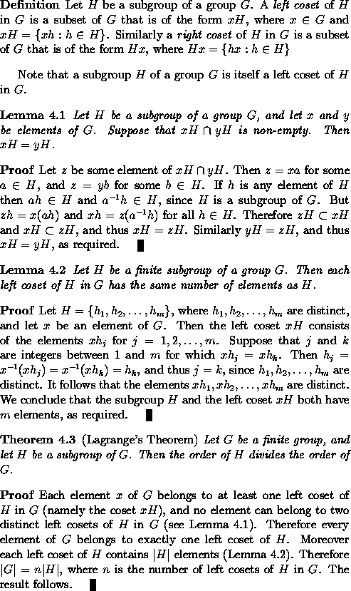

In LaTeX, one can create `environments' for statements
of theorems, lemmas, propositions, corollaries, etc., and
also for proofs, definitions, examples and remarks.
These can be established using appropriate \newtheorem
and \newenvironment commands: these commands are
best included in the LaTeX input file before
\begin{document}.
The following code will create
theorem, lemma,
proposition, corollary,
proof, definition,
example and remark
environments, together with a control sequence \qed which
produces `tombstones' for the ends of proofs:
\newtheorem{theorem}{Theorem}[section]
\newtheorem{lemma}[theorem]{Lemma}
\newtheorem{proposition}[theorem]{Proposition}
\newtheorem{corollary}[theorem]{Corollary}
\newenvironment{proof}[1][Proof]{\begin{trivlist}
\item[\hskip \labelsep {\bfseries #1}]}{\end{trivlist}}
\newenvironment{definition}[1][Definition]{\begin{trivlist}
\item[\hskip \labelsep {\bfseries #1}]}{\end{trivlist}}
\newenvironment{example}[1][Example]{\begin{trivlist}
\item[\hskip \labelsep {\bfseries #1}]}{\end{trivlist}}
\newenvironment{remark}[1][Remark]{\begin{trivlist}
\item[\hskip \labelsep {\bfseries #1}]}{\end{trivlist}}
\newcommand{\qed}{\nobreak \ifvmode \relax \else
\ifdim\lastskip<1.5em \hskip-\lastskip
\hskip1.5em plus0em minus0.5em \fi \nobreak
\vrule height0.75em width0.5em depth0.25em\fi}
(For an explanation of the syntax of the LaTeX commands used to
define the above environments, consult the
LaTeX User's Guide and Reference Manual by
Leslie Lamport.)
The statement of any theorem can then be enclosed between
\begin{theorem} and \end{theorem}. The theorem
will be labelled and numbered by LaTeX, and the statement of the
theorem with be automatically italicised. Lemmas, propositions
and corollaries will be treated similarly.
To introduce cross-references, one can give the command
\label{name} within the
statement of a theorem, lemma, proposition or corollary in order
assign the given name to that result. To reference the
number assigned to that result in some other theorem, one gives
the command \ref{name}; this will be
replaced by the number automatically assigned by LaTeX to
that result when the LaTeX program is executed. The necessary
space above and below the statement of the theorem will automatically
be generated by LaTeX.
The environments and commands introduced above are used in typesetting the following text:
This text is typeset from the following LaTeX input:
\begin{definition}
Let $H$ be a subgroup of a group~$G$. A \emph{left coset}
of $H$ in $G$ is a subset of $G$ that is of the form $xH$,
where $x \in G$ and $xH = \{ xh : h \in H \}$.
Similarly a \emph{right coset} of $H$ in $G$ is a subset
of $G$ that is of the form $Hx$, where
$Hx = \{ hx : h \in H \}$
\end{definition}
Note that a subgroup~$H$ of a group $G$ is itself a
left coset of $H$ in $G$.
\begin{lemma}
\label{LeftCosetsDisjoint}
Let $H$ be a subgroup of a group $G$, and let $x$ and $y$ be
elements of $G$. Suppose that $xH \cap yH$ is non-empty.
Then $xH = yH$.
\end{lemma}
\begin{proof}
Let $z$ be some element of $xH \cap yH$. Then $z = xa$
for some $a \in H$, and $z = yb$ for some $b \in H$.
If $h$ is any element of $H$ then $ah \in H$ and
$a^{-1}h \in H$, since $H$ is a subgroup of $G$.
But $zh = x(ah)$ and $xh = z(a^{-1}h)$ for all $h \in H$.
Therefore $zH \subset xH$ and $xH \subset zH$, and thus
$xH = zH$. Similarly $yH = zH$, and thus $xH = yH$,
as required.\qed
\end{proof}
\begin{lemma}
\label{SizeOfLeftCoset}
Let $H$ be a finite subgroup of a group $G$. Then each left
coset of $H$ in $G$ has the same number of elements as $H$.
\end{lemma}
\begin{proof}
Let $H = \{ h_1, h_2,\ldots, h_m\}$, where
$h_1, h_2,\ldots, h_m$ are distinct, and let $x$ be an
element of $G$. Then the left coset $xH$ consists of
the elements $x h_j$ for $j = 1,2,\ldots,m$.
Suppose that $j$ and $k$ are integers between
$1$ and $m$ for which $x h_j = x h_k$. Then
$h_j = x^{-1} (x h_j) = x^{-1} (x h_k) = h_k$,
and thus $j = k$, since $h_1, h_2,\ldots, h_m$
are distinct. It follows that the elements
$x h_1, x h_2,\ldots, x h_m$ are distinct.
We conclude that the subgroup~$H$ and the left
coset $xH$ both have $m$ elements,
as required.\qed
\end{proof}
\begin{theorem}
\emph{(Lagrange's Theorem)}
\label{Lagrange}
Let $G$ be a finite group, and let $H$ be a subgroup
of $G$. Then the order of $H$ divides the order of $G$.
\end{theorem}
\begin{proof}
Each element~$x$ of $G$ belongs to at least one left coset
of $H$ in $G$ (namely the coset $xH$), and no element
can belong to two distinct left cosets of $H$ in $G$
(see Lemma~\ref{LeftCosetsDisjoint}). Therefore every
element of $G$ belongs to exactly one left coset of $H$.
Moreover each left coset of $H$ contains $|H|$ elements
(Lemma~\ref{SizeOfLeftCoset}). Therefore $|G| = n |H|$,
where $n$ is the number of left cosets of $H$ in $G$.
The result follows.\qed
\end{proof}